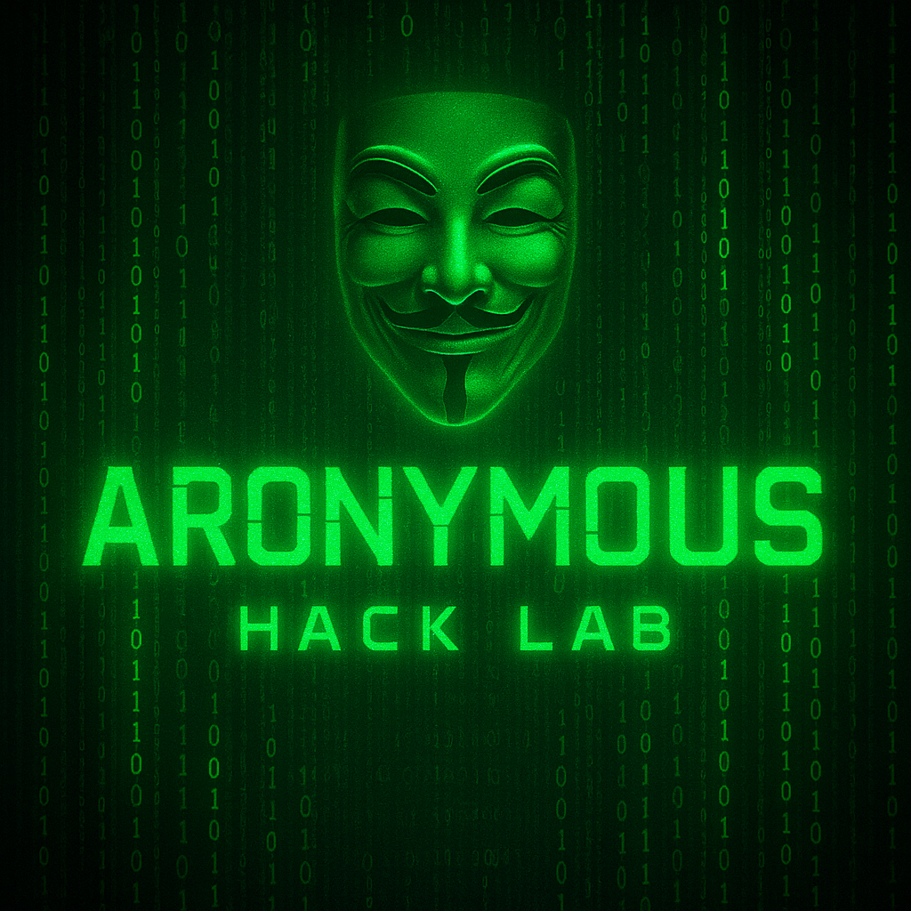

Que es un ZERO DAY y algo mas...

Ver docuemntos


Investigación Técnica y Forense de Amenazas Cibernéticas
El análisis avanzado de cibercrimen implica la descomposición sistemática de campañas maliciosas, el estudio de tácticas, técnicas y procedimientos (TTPs) empleados por grupos APT y la correlación de indicadores de compromiso (IoCs) a gran escala. Esta disciplina combina ciberinteligencia (CTI), ingeniería inversa de malware, explotación de vulnerabilidades zero-day y monitoreo continuo de infraestructuras críticas para anticipar riesgos emergentes.
Entre las metodologías clave se incluyen el análisis forense digital, la detección basada en comportamiento, la simulación de amenazas mediante Red Teaming y la aplicación de marcos como MITRE ATT&CK para mapear técnicas adversarias. Herramientas como SIEMs de nueva generación, sistemas EDR/XDR y plataformas de Threat Hunting permiten correlacionar grandes volúmenes de datos en tiempo real, fortaleciendo la capacidad defensiva frente a actores estatales y cibercriminales organizados.
La investigación del cibercrimen no se limita al plano técnico, sino que también abarca el análisis de la economía subterránea en la dark web, criptomercados y foros clandestinos, donde se intercambian exploits, credenciales y servicios de ransomware-as-a-service (RaaS). El entendimiento profundo de estos ecosistemas es esencial para anticipar tendencias y diseñar estrategias de mitigación proactivas.
Solo mediante un enfoque ético, multidisciplinario y altamente técnico es posible contrarrestar el impacto global del cibercrimen, fortalecer la resiliencia digital y proteger infraestructuras críticas frente a un panorama de amenazas en constante evolución.
Envía tu donación en Bitcoin, Ethereum o USDT para apoyar el proyecto.
Usa tu cuenta PayPal para contribuir fácilmente y de manera segura.
Tarjetas de crédito, Stripe y otros métodos de pago digital.
Apoya este proyecto para mantener la investigación activa y la publicación constante de contenido técnico y actualizado sobre ciberseguridad.